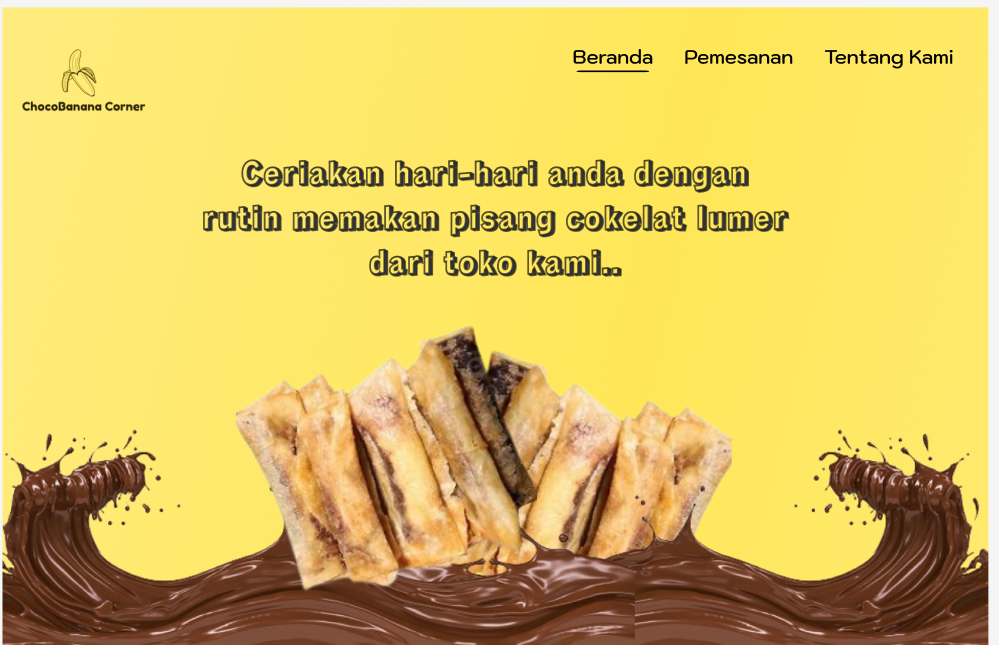
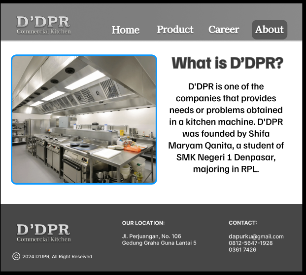
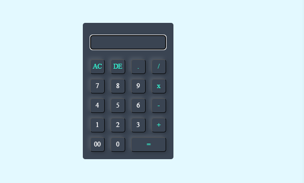

Choco Banana

D'DPR

Kalkulator
Siswi Rekayasa Perangkat Lunak

Sebagai siswi RPL di SMK Negeri 1 Denpasar, saya memiliki dasar dalam HTML, CSS, dan Figma. Saya antusias belajar dan berkembang dalam bidang pengembangan web. Dengan melakukan kegiatan Praktik Kerja Langsung saya berharap akan meningkatkan keterampilan, mendapatkan pengalaman industri, dan berkontribusi dalam proyek dengan tanggung jawab.
Saat ini, saya tengah menempuh pendidikan di SMK Negeri 1 Denpasar dengan mengambil jurusan Rekayasa Perangkat Lunak, yang memberikan kesempatan bagi saya untuk mengembangkan keterampilan di bidang pengembangan perangkat lunak.